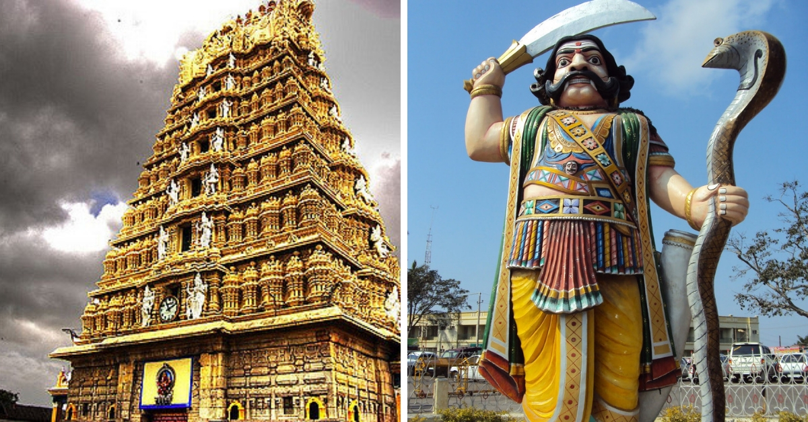

Mysore
Ideal Trip Duration: 2 Full Days
Nearest city to mysore: Mysore
Best Time to Visit Mysore: October to February
Peak Season: October & December to January & May to June
At a distance of 139 km from Bangalore, 476 km from Chennai, 247 km from Mangalore, 203 km from Coimbatore & 128 km from Ooty, Mysore is the 2nd biggest City in Karnataka. It is the erstwhile capital of the Mysore Maharajas, who ruled the Mysore State between 1399 & 1947. Mysore still retains its old world charm with its palaces, heritage buildings, traditions and temples. At an altitude of 763 meters surrounded by hill ranges from north to south, it is known as the City of Palaces. Mysore is one of the top destinations to visit as part of 2 day trip near Bangalore and Mysore Palace is among the must include place in your Mysore Tour Packages.
According to this story in the mythological Devi Purana, Mysore was ruled by the demon-king Mahishasura. He was called Mahishasura, because he was a buffalo-headed monster. Hearing to the prayers of Gods and Goddess to save them from the monster, Goddess Parvathi took birth as Chamundeswari and killed the monster. Hence, this place came to be known as Mahishuru, later became Maisuru & Mysore.
The Mysore Kingdom, ruled by the Wodeyar family was initially served as a vassal state of the Vijayanagara Empire. After the decline of Vijayanagara Empire, Mysore became independent and the region was ruled from Srirangapatna. The power of Mysore moved into the hands of Hyder Ali and Tipu Sultan between 1761 and 1799. After the death of Tipu Sultan in fourth Anglo-Mysore war, the power was handed over back to Wodeyar family.
Mysore has several tourist attractions including palaces, museums, temples, gardens, etc. Mysore Palace, Chamundi Hill Temple, Mysore Zoo are the most famous places to visit in Mysore. Srirangapatna and Brindavan Gardens are major attractions close to Mysore. Mysore can also be visited along with Wayanad as part of Wayanad tour packages.
Bangalore Airport is the nearest airport which is about 184 km from Mysore. It has regular flights from Kolkata, Mumbai, Delhi, Hyderabad, Chennai, Ahmedabad, Goa, Kochi, Mangalore, Pune and Thiruvananthapuram.
Mysore Junction Railway station is well connected by train from Bangalore, Bagalkot, Tirupati, Tuticorin, Hubli, Chennai, Dharwar and Arsikere. Mysore has direct bus connectivity with Chennai, Bangalore, Ooty, Coorg, Coimbatore, kochi, Mumbai, Pune, Goa and Hyderabad.
Mysore Dussera is the celebration of victory of good over evil. The month long Dussera celebrations, with its colorful processions, fireworks and the beautifully lighted palace, gives an enchanting look to the city. During the Wodeyar rule Mysore reached the peak of its glory.
Mysore has pleasant weather throughout the year, though October to March is the best season to visit. It usually takes about 2 full days to visit the important places in Mysore.
Places in Mysore
Mysore palace

An incredibly breathtaking example of Indo - Saracenic style of architecture, the Mysore Palace is a magnificent edifice located in Mysore in the state of Karnataka. Also known as the Amba Vilas Palace, it is the former palace of the royal family of Mysore and is still their official residence. Mysore Palace was built in the year 1912 for the 24th Ruler of the Wodeyar Dynasty and is counted amongst one of the biggest palaces in the country.
The construction of the Mysore Palace was orchestrated by the Maharaja Krishnaraja Wadiyar IV referred as "Rajarishi" (saintly king) by Mahatma Gandhi. It was then further expanded by his son and the last Maharaja of Mysore, Maharaja Jayachamaraja Wadiyar. The facade of the palace is a harmonious blend of Hindu, Muslim, Rajput and Gothic styles which imparts it a regal quality. With the Chamundi Hills towards its eastern side, the spectacle of the Mysore Palace is an enchanting sight to behold. Needless to say, it is the second most visited historical monument visited by both local and foreign tourists after the Taj Mahal. Presently located inside the Old Fort, Mysore Palace is renowned for its light & sound show and vibrant Dussehra celebrations.
Brindavan garden
 mysore brundavan.jpg)
The Brindavan Gardens, spread over 60 acres, is located at a distance of 21 km away from Mysore. Built across the notable river of India, Cauvery, it took around five years to complete the project. The well-synchronised fountain show with music, boating and well-manicured grass with flowerbeds are some of the top experiences of Brindavan Garden.
Constructed in 1932 by the Diwan of Mysore, Sir Mirza Ismail, Brindavan Garden is visited by millions of tourists every year.
Divided into two parts, north and south, boating facility offered by the Karnataka State Tourism Development Corporation which connects the two parts along with a walkway bridge.
Mysore zoo
.jpg)
Sri Chamarajendra Zoological Gardens, also known as the Mysore Zoo is one of the best zoological gardens in India. Maharaja Chamaraja Wodeyar established this Zoo in the year 1892 for the Royals. Furthermore, after the attainment of freedom, it was handed over to the Department of Parks and Gardens of the State Govt. The Zoo's meticulous planning is responsible for making it a special zoological garden. It tends to create a natural habitat for the animals in it. From Big to small cats, Aquatic to terrestrial birds, and Primates to reptiles, one Hundred and Sixty-Eight species find their place in this zoo. The world's first caesarian section delivery performed on an elephant in Mysore zoo gave it global fame and recognition.
Located near the palace in Mysore, The Zoological Garden covers an area of 157 acres. It is one of the oldest and most famous zoos in India. It plays the role of an orphanage to the abandoned animals. Various exhibitions are regularly held here with an insect exhibition stealing the show. Following this, the Zoo carries forward certain Education Programmes such as Youth Club activities, Literary Competitions, and Summer Camp activities. The Karanji Lake was put under Zoo jurisdiction in 1976 and since has been a calm and serene place for boating.
Chamundeshwari Temple

The Chamundeshwari Temple is a traditional Hindu temple located on the eastern edge of Mysore at the height of 1000ft on the Chamundi hills. Dedicated to and named after goddess Durga, the temple also has statues of Nandi and Mahishasura, the demon. Being one of the oldest temples in the palace city of Mysore, the temple is a must-visit attraction for the travellers. The Chamundeshwari Temple is considered as a Shakti Peetha and is one among the 18 Maha Shakti Peethas.
There are two options for the visitors to reach the Chamundeshwari temple, either by steps or by driving through the interwoven valley road. The temple showcases the fierce form of Shakti, a tutelary deity that was held in reverence for centuries by the Maharajas of Mysore; hence deriving its name from goddess Durga. The idol of goddess Durga here is adorned every day and worshipped by a number of priests. The deity is offered a variety of fruits, coconuts and flowers to show respect and reverence.
Located atop the Chamundi hills, the temple is usually not too crowded. The Chamundeshwari temple also has statues of the demon Mahishasura; you can even see the enormous statues from the way driving up to the temple. The temple also has a Nandi statue, which is that of a cow and holds great importance in the Hindu mythology. The view from the temple is stunning, as you can see many significant structures of the city including the Lalitha Mahal Palace. The temple has also been declared as the No Plastic Zone, thus making a huge contribution to the conservation of our environment by curbing the use of plastics and dumping of hazardous materials.
| Route map |
Back To